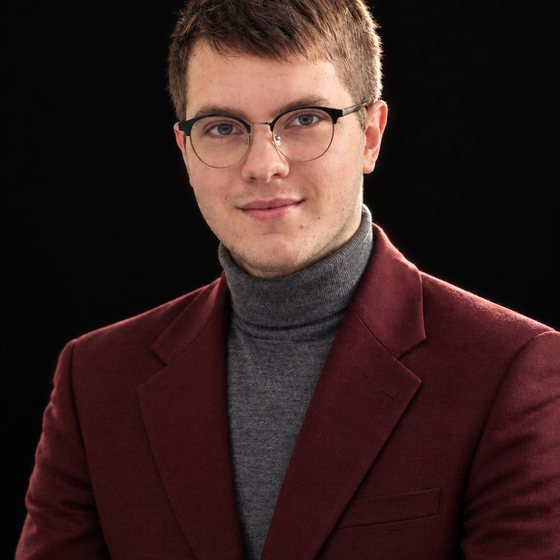

Classe 2006, bellunese. Diplomato in Informatica e Telecomunicazioni, ora frequento l'ITS Alto Adriatico a Pordenone, indirizzo System Administrator. Appassionato di programmazione, infrastrutture IT e gestione di sistemi. BusItinera è il mio primo progetto reale: ci ho messo testa, cuore e notti insonni.
Dal primo codice alle infrastrutture aziendali, un percorso lineare con una direzione chiara.
Dalle basi della programmazione all'infrastruttura, un set di competenze in costante espansione.
Java, C++, C, PHP 8, JavaScript, HTML5, CSS3. Sviluppo web full-stack con architettura MVC e API sicure.
MariaDB, MySQL, SQL avanzato. Migrazioni schema, integrità dei dati e backup automatici.
Docker e Docker Compose. Deploy su NAS (QNAP, Synology) e su server cloud. Amministrazione sistemi Linux e networking.
Autenticazione a due fattori, protezione degli accessi, gestione sessioni e prevenzione degli attacchi più comuni.
Assemblaggio PC, upgrade componenti, installazione sistemi operativi, diagnosi guasti e cablaggio.
Pacchetto Office, integrazione Google Maps, controllo versione con Git e sviluppo assistito da AI.
Disciplina, creatività e adrenalina: le stesse qualità che porto nel lavoro.
Arbitro federale di pallacanestro dal 2020. Decisioni rapide e gestione della pressione.
Arti marziali per disciplina mentale e fisica. Resilienza e concentrazione.
Ogni viaggio è una lezione: Oregon, Italia e oltre.
Pilotaggio droni e montaggio video: tecnologia e creatività visiva.
Il primo progetto reale, nato da un bisogno concreto e costruito da zero.
Un'agenda intelligente che mostra la flotta a colpo d'occhio ed evita in automatico le doppie prenotazioni di mezzi e autisti. Un portale dedicato che porta i viaggi sul telefono degli autisti, con navigazione e conto alla rovescia. Gestione completa di mezzi, clienti, autisti e pagamenti, con accessi protetti e backup automatici. Funziona sul server dell'azienda o nel cloud.